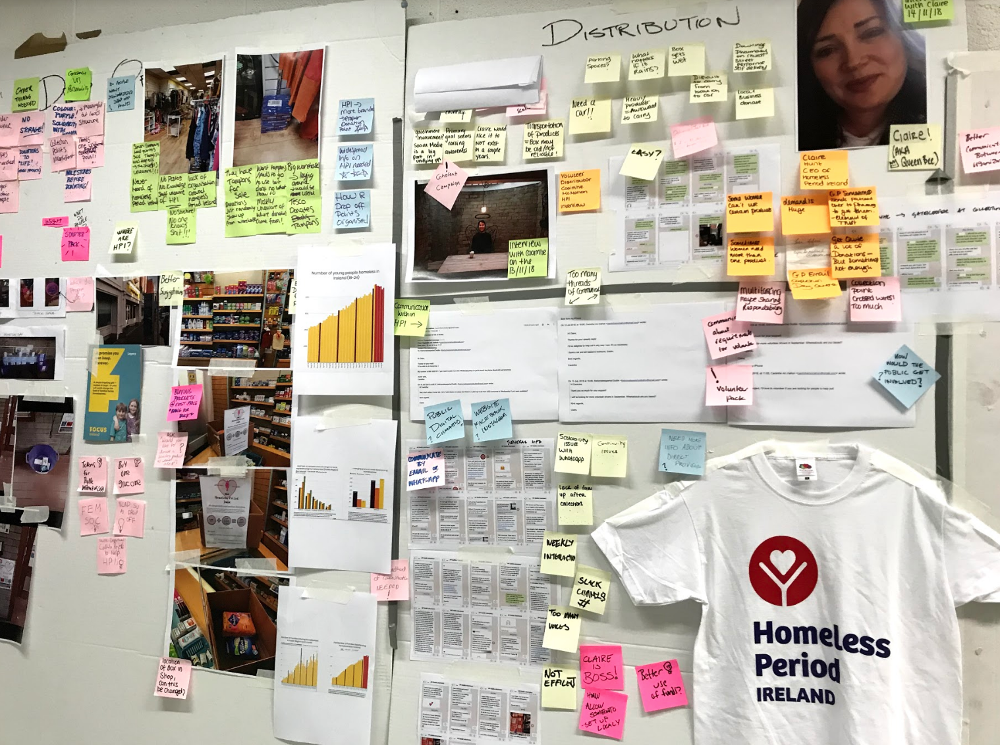
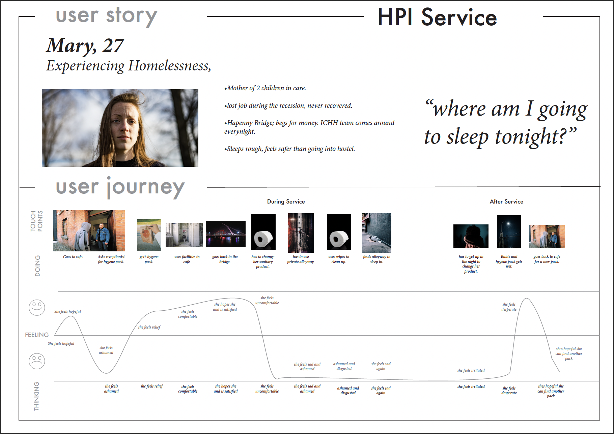
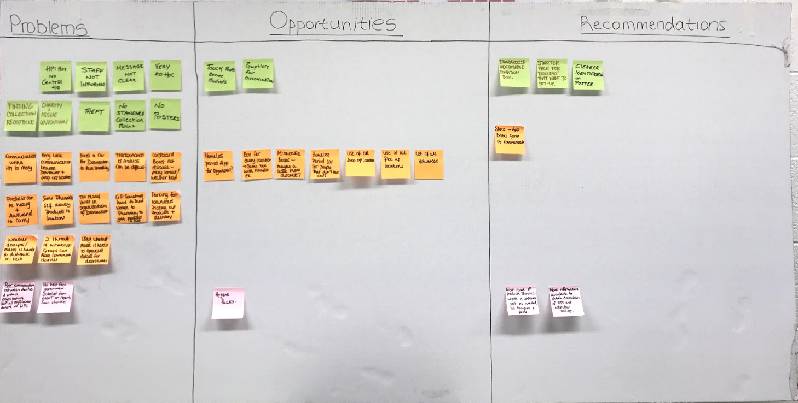
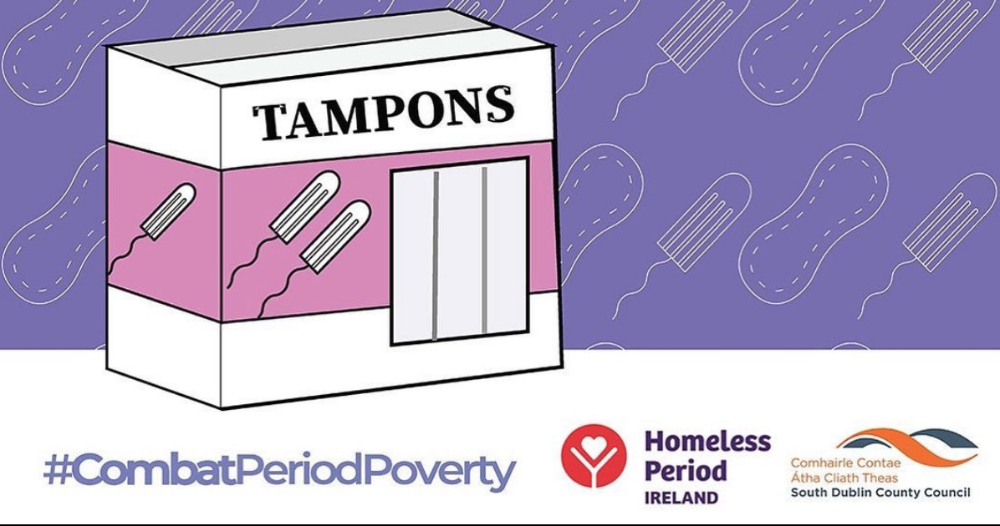
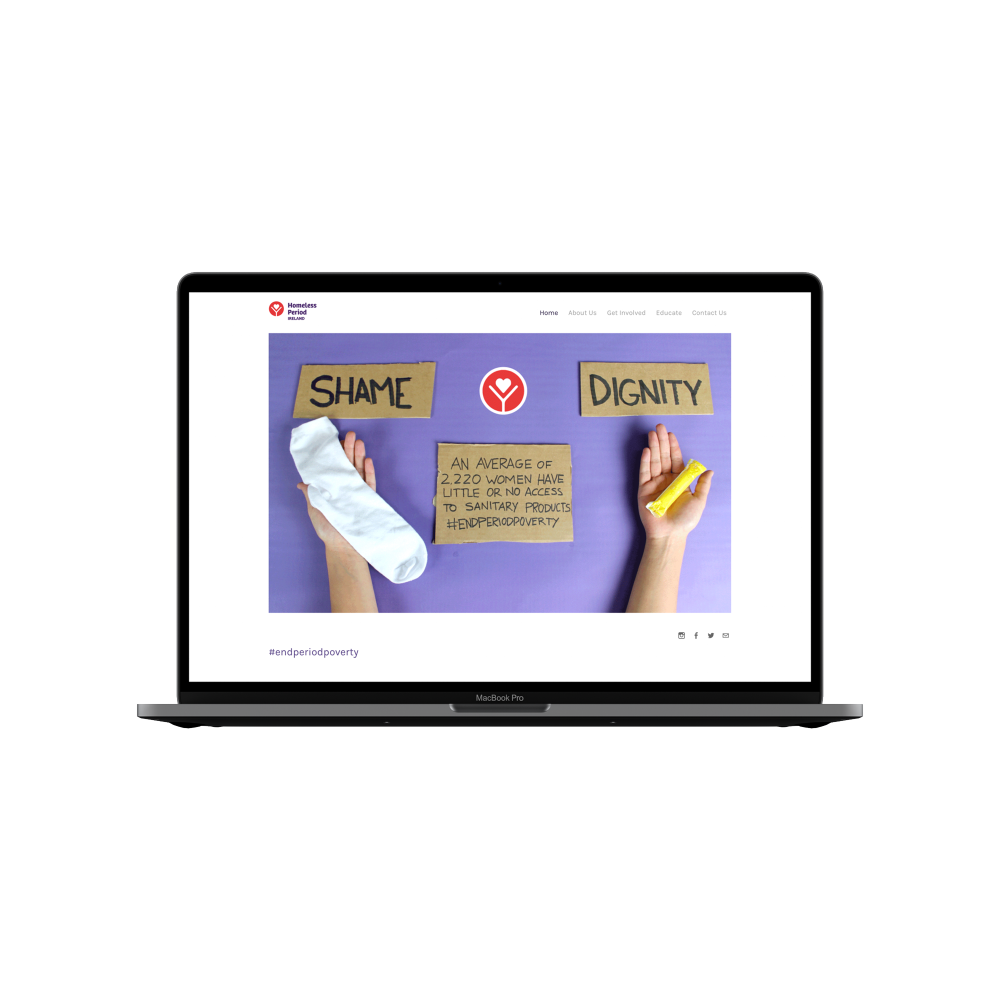

Homeless Period Ireland
Interaction Design

Role
UX/UI Designer, Service Designer
Tools
Adobe Illustrator, Photoshop and Premier Pro, Adobe XD
Summary
Homeless Period Ireland is a service that provides sanitary products to women experiencing homelessness in Ireland. Our team redesigned physical and digital touchpoints to facilitate the donations of hygienic products such as tampons and pads.
It used social media and branding to increase awareness and promote government action on this problem.
Challenges
It is that dreaded time of the month for homeless women or women in crisis. They usually have no choice but to go with limited or no access to sanitary products. This initiative believes that tampons and towels should be available to all women.
Homeless Period Ireland allowed my colleagues and me to make a difference by facilitating a holistic service for women in need and bringing awareness to their campaign.
The Solution
User Research
We started this project by researching Dublin and interviewing women in need and volunteers working in several homeless organizations. We began by interviewing the founder of the service and continued through to the volunteers of the service
and local shelters and women who have experienced or were experiencing homelessness.
Interviewees
Clair Hunt
Homeless Period Ireland, Founder
6x Volunteers
Local Homeless Shelters
7x Neighbors In Need
Experiencing Homelessness
Research Synthesis
We discovered that women were rarely receiving donations and that no one knew about the HPI organization's actions in changing government law.

User Journey
We created a persona/user story that would map an experience of a person who needed sanitary products at the current time, which made it clear that the service required a redesign to suit the women's needs.

Problems & Opportunities
The service needed awareness on social media and around the local universities. It also required branded donation stations so that donators could easily find the stations and finally a website so that volunteers could sign-up and set up new
donations stations.

Poster Deliverable
We designed posters and the hashtags #endperiodpoverty #combatperiodpoverty to allow users to get the service trending on social media.

Donation Station Deliverable
We also created branded donation stations in Fusion 360, a 3D modelling software; this ensured that they could be flat packaged and shipped to any location quickly. The colours meant donators could be easily spotted, securing donations arrived
successfully.

T-Shirt Deliverable
We also created t-shirts with the Homeless Period Logo and the hashtag #endperiodpoverty, engaging younger audiences to support the service to increase engagement via social media further.

Website Deliverable
Finally, we created a website; the site included the donation stations locations and the ability to sign up as a volunteer to arrange a station and help deliver products to the shelter that needed them most.
